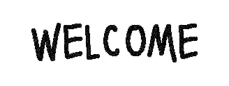

I'm Grave Robert, an """artist""" and """"musician"""".
I like to play games, listen to music, generally normal human things.
This site will contain most, if not all of my creations and other stuff I've made.
The 'project' started out as a small thing with my friend to test the Live Share addon for VSC,
as you might've guessed this ended up changing into a personal website.
I hope that someday this site will be a frequently visted page by some of you!
- Make the website mobile friendly
(at least try making it mobile friendly)
- More pages(?)
- Possibly share websites made by other folks
- Add different banners for each page
- Add a page system for the blog
- Remake icons, images, etc.
- More stuff'll come to mind eventually